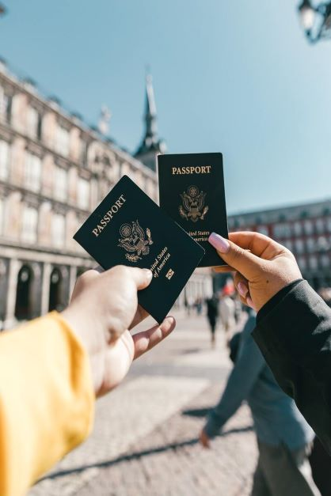

The process of applying for a visa is often the first step for many visitors when they set out to arrange an international holiday. On the basis of our own personal experiences, we have created a comprehensive list of prerequisites and helpful hints for applying for visas. At the end of each post, you'll find a section with answers to some of the questions that are asked the most frequently.
Despite the fact that this is a site dedicated to inexpensive travel, our primary focus is not on recommending the most cost-effective methods of getting around. It's not always the case that the product with the lowest price is the best. There are instances when the choice that comes with the lowest price tag is not the best one. If we had been in a position where our finances prevented us from doing so, we never would have left our homeland. Everything you need to know in order to turn your trip dreams into a reality, even the wildest ones. The purpose of this exercise is to locate destinations that are worthy of receiving our vacation spending money. The objective is to make the most of each journey. In order to accomplish this, one needs to develop the foresight to make preparations in advance and the conviction to acknowledge the value of what is being offered.